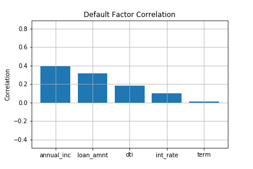

Use of Machine Learning Algorithms to Predict Credit Loan Defaults

A brief summary of our project
Project
Objective: predict the probability of credit default based on credit owner’s characteristics
The Data: the data was taken from statistics available on Lending Club, a peer-to-peer lending system, for credit statuses in 2015. "Lending Club enables borrowers to create unsecured personal loans between $1,000 and $40,000. Investors can search and browse the loan listings on Lending Club website and select loans that they want to invest in based on the information supplied about the borrower, amount of loan, loan grade, and loan purpose." - Wikipedia
Machine Learning: logistics regression and random trees were used as prediction algorithms

Data Analysis
Initial data analysis focuses on a few different variables ranging from looking at credit grade, loan amounts, the purposes for those loans, and loans by state
The first figure shows the average loan amount by grade. It can be seen that people with a lower credit grade appear to appear to accrue higher debt.
The second figure shows the type of loans taken by people. The data shows the most common type of loans are credit cards, and educational was the least common.

The third figure combines the first two, showing loans by type, and how much each credit grade takes of each type. One telling thing about this graph is that the lower grades took less loans, but the loans taken were higher amounts.

Then we looked at the amount of loans taken out of each state. Texas, California, and New York are amongst the highest loaners and so it's no surprise that these states also have a higher amount of people defaulting on those loans.
Machine Learning
Random Forest
"Random forests or random decision forests are an ensemble learning method for classification, regression and other tasks, that operate by constructing a multitude of decision trees at training time and outputting the classification or regression of the individual trees. Random decision forests correct for decision trees' habit of overfitting to their training set." - Wikipedia
A random forest test was also used in order to determine the correlation between various numerical features and default status. The model score after fitting was .81. After assessing the model fit I ran a feature importance test to determine which feature was best correlated. The best correlated feature was “annual_inc” and the least correlated feature was “term”. This makes sense to me because the annual income of the borrower would make it more difficult to repay a loan. The second most correlated feature was “loan_amnt”. This makes sense because a higher loan amount would be harder to repay.
Logistics Regression
Logistic Regression is a type of classification algorithm involving a linear discriminant where the output is a probability that the given input point belongs to a certain class. In our case, that class is default or no default.
Logistical Regression was used to determine the correlation between the categorical factors of employment. The test shows that 10+ years of employment length is the least correlated to a default status. The factor with the highest correlation to default was “1 year” of experience. However, none of these factors were highly correlated to default status.
It was used to determine the correlation between the categorical factors of Loan Purpose. Based on the results of the test, the loan purpose with the highest correlation to default status is “Small Business” and the second highest correlation is “Renewable Energy”. The loan purpose with the lowest correlation was “Wedding” and “Credit Card”.
It was also used to determine the correlation between the categorical factors of loan grade. Lending Club assigns a grade to each loan based on credit score and combination of several internal indicators of credit risk. This test shows that the internal model assigning a grade within lending club is doing a good job of determining risky loans. For example, the A graded loans have the lowest correlation to default status and the G rated loans have the highest correlation to default status.

We then used logistical regression to determine the correlation between the categorical factors of home ownership type. While none of these factors were highly correlated to default status, it is surprising that “mortgage” was least correlated to default status while “own” a home is the second least correlated. It is not surprising that “Rent” is the highest correlation to default.
Result
Following the logistical regression tests on each categorical factor we tested the accuracy of the model in predicting default status. The training and testing data scores were both .81. The overall accuracy of predictions was 82%.
Comparison Variables
Here is a comparison of what the data said with what the machine learning predicted.
This is a graph showing the length of employment and the count of default status. Overall, those working 10+ years take out the most loans and have a low percentage of defaulting, but this is also likely related to their being a wider employment timeframe. This can be observed such that those working 9 years however have a relatively high default rate when compared to those working less than a year. It is hard to say whether working more translates to less debt and default status.
This graph shows the count of default status by grade. The primary observation is that grades F and G show about a 50 percent default rate.

This graph shows the count of default status by the loan purpose. Just about all purposes show about a 50 percent default rate except for weddings and educational loans.
This shows default statuses for the renting, owning, or mortgaging a house. Overall it shows that those that rent have a higher default status.